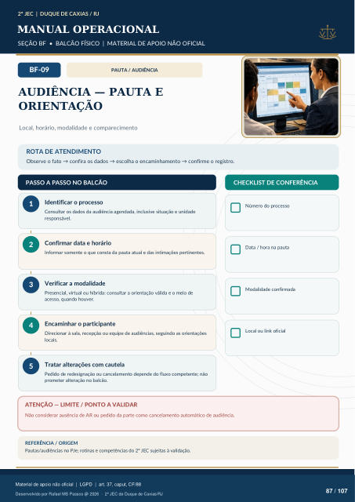

PAUTA / AUDIÊNCIA
AUDIÊNCIA — PAUTA E
ORIENTAÇÃO
Local, horário, modalidade e comparecimento
ROTA DE ATENDIMENTO
Observe o fato → confira os dados → escolha o encaminhamento → confirme o registro.
PASSO A PASSO NO BALCÃO
CHECKLIST DE CONFERÊNCIA
Identificar o processo
Consultar os dados da audiência agendada, inclusive situação e unidade responsável.
Confirmar data e horário
Informar somente o que consta da pauta atual e das intimações pertinentes.
Verificar a modalidade
Presencial, virtual ou híbrida: consultar a orientação válida e o meio de acesso, quando houver.
Encaminhar o participante
Direcionar à sala, recepção ou equipe de audiências, seguindo as orientações locais.
Tratar alterações com cautela
Pedido de redesignação ou cancelamento depende do fluxo competente; não prometer alteração no balcão. Número do processo Data / hora na pauta Modalidade confirmada Local ou link oficial
ATENÇÃO — LIMITE / PONTO A VALIDAR
Não considerar ausência de AR ou pedido da parte como cancelamento automático de audiência.
REFERÊNCIA / ORIGEM
Pautas/audiências no PJe; rotinas e competências do 2º JEC sujeitas à validação.
Ver também o infográfico original (página 87)
